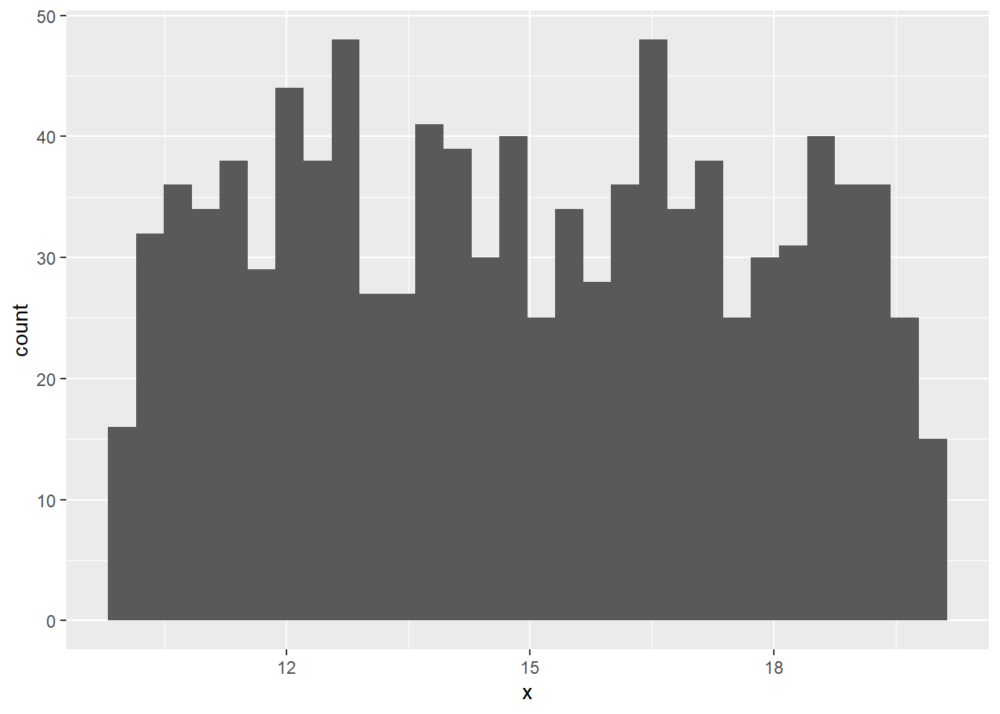
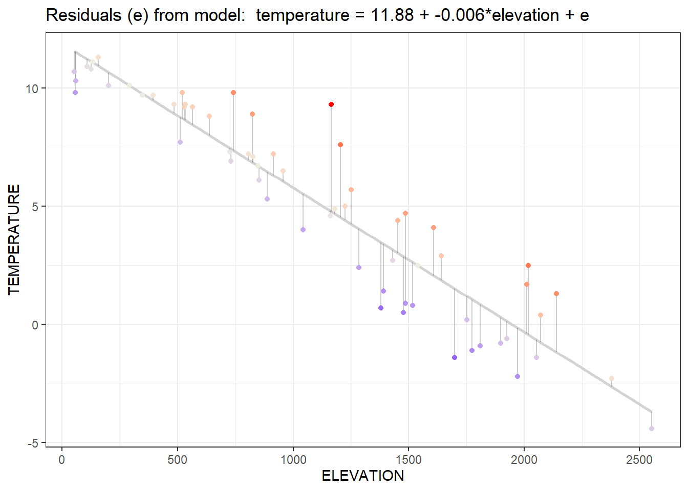
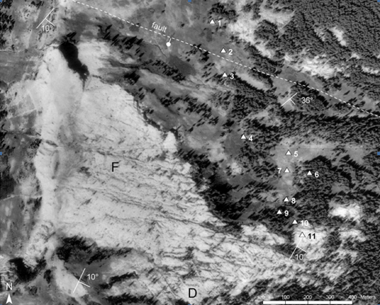
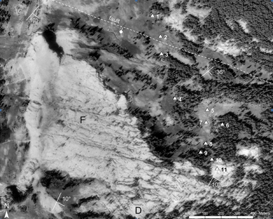
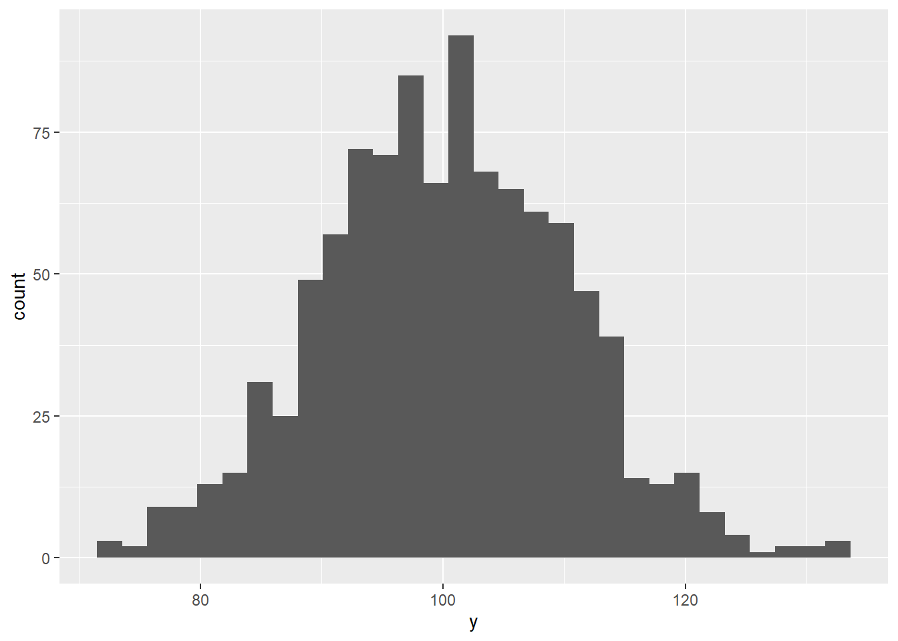
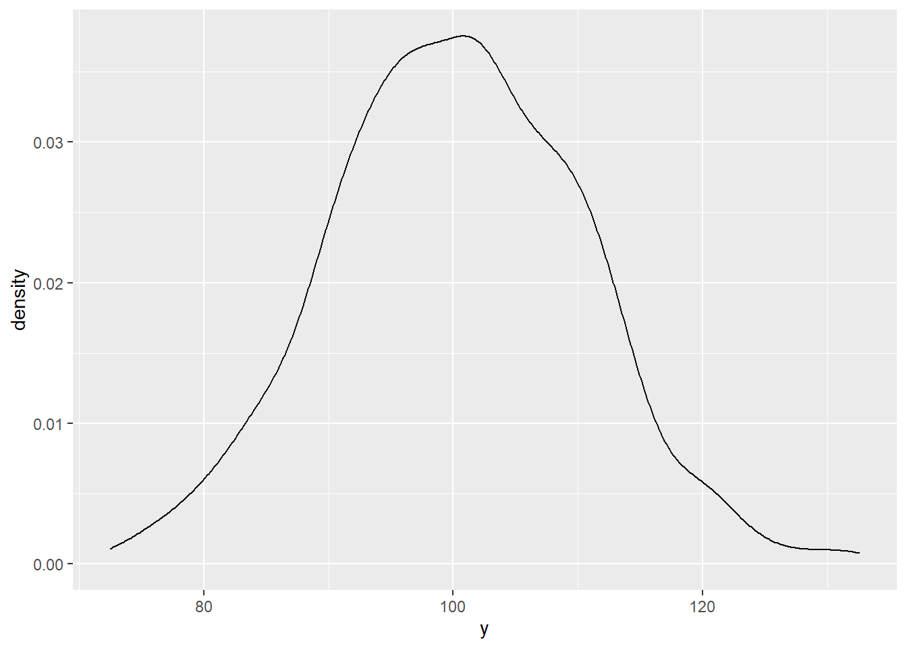
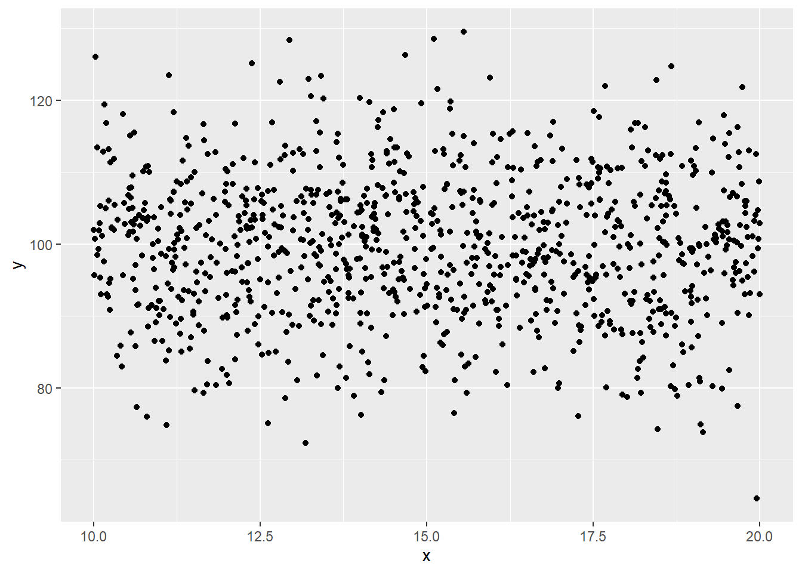
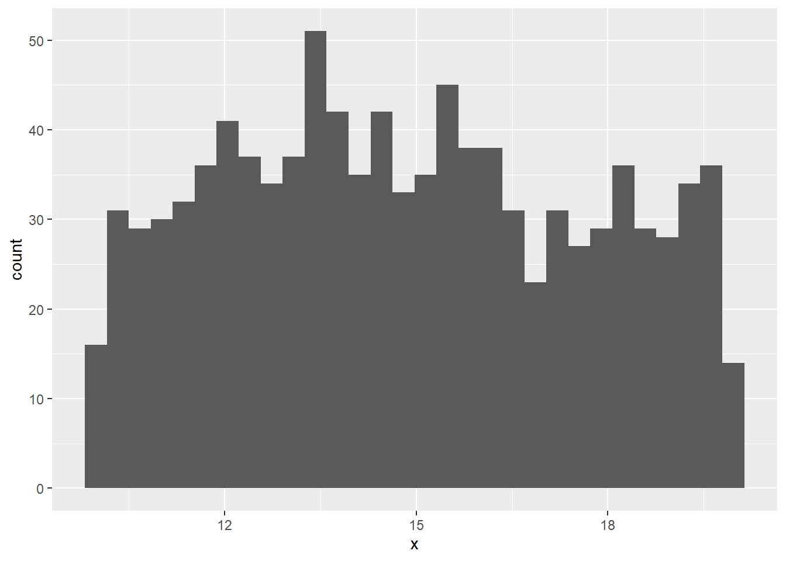
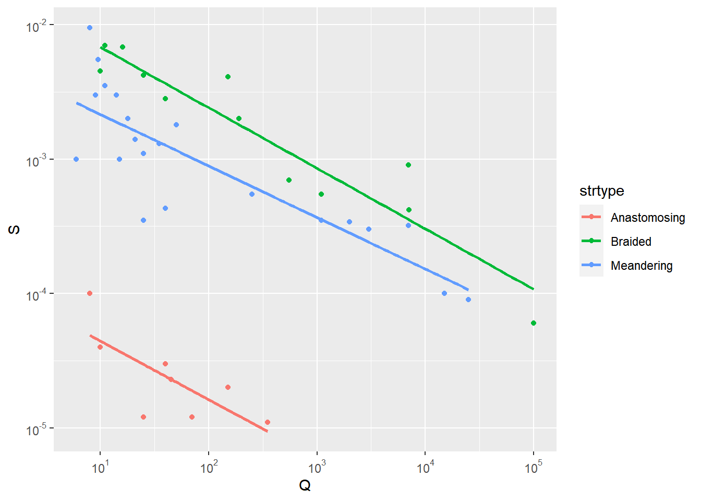
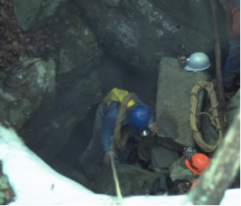

7 Statistical Summaries and Tests

7.1 Goals of statistical analysis
To frame how we might approach statistical analysis and modeling, there are various goals that are commonly involved:
- To understand our data
- nature of our data, through summary statistics and various graphics like histograms
- spatial statistical analysis
- time series analysis
- To group or classify things based on their properties
- using factors to define groups, and deriving grouped summaries
- comparing observed vs expected counts or probabilities
- To understand how variables relate to one another
- or maybe even explain variations in other variables, through correlation analysis
- To model behavior and maybe predict it
- various linear models
- To confirm our observations from exploration (field/lab/vis)
- inferential statistics e.g. difference of means tests, ANOVA, X^2
- To have the confidence to draw conclusions, make informed decisions
- To help communicate our work
These goals can be seen in the context of a typical research paper or thesis outline in environmental science:
- Introduction
- Literature Review
- Methodology
- Results
- field, lab, geospatial data
- Analysis
- statistical analysis
- qualitative analysis
- visualization
- Discussion
- making sense of analysis
- possibly recursive, with visualization
- Conclusion
- conclusion about what the above shows
- new questions for further research
- possible policy recommendation
The scope and theory of statistical analysis and models is extensive, and there are many good books on the subject that employ the R language. This chapter is a short review of some of these methods and how they apply to environmental data science.
7.2 Summary Statistics
Summary statistics such as mean, standard deviation, variance, minimum, maximum, and range are derived in quite a few
R functions, commonly as a parameter or a sub-function (see mutate). An overall simple statistical summary is very easy to do in base R:
summary(tidy_eucoak)## site site # tree Date month rain_mm rain_subcanopy
## Length:180 Min. :1.000 Length:180 Min. :2006-11-08 Length:180 Min. : 1.00 Min. : 1.00
## Class :character 1st Qu.:2.000 Class :character 1st Qu.:2006-12-07 Class :character 1st Qu.:16.00 1st Qu.:16.00
## Mode :character Median :4.000 Mode :character Median :2007-01-30 Mode :character Median :28.50 Median :30.00
## Mean :4.422 Mean :2007-01-29 Mean :37.99 Mean :34.84
## 3rd Qu.:6.000 3rd Qu.:2007-03-22 3rd Qu.:63.25 3rd Qu.:50.00
## Max. :8.000 Max. :2007-05-07 Max. :99.00 Max. :98.00
## NA's :36 NA's :4
## slope aspect runoff_L surface_tension runoff_rainfall_ratio
## Min. : 9.00 Min. :100.0 Min. : 0.000 Min. :28.51 Min. :0.00000
## 1st Qu.:12.00 1st Qu.:143.0 1st Qu.: 0.000 1st Qu.:37.40 1st Qu.:0.00000
## Median :24.00 Median :196.0 Median : 0.825 Median :62.60 Median :0.03347
## Mean :20.48 Mean :186.6 Mean : 2.244 Mean :55.73 Mean :0.05981
## 3rd Qu.:27.00 3rd Qu.:221.8 3rd Qu.: 3.200 3rd Qu.:72.75 3rd Qu.:0.08474
## Max. :32.00 Max. :296.0 Max. :16.000 Max. :72.75 Max. :0.42000
## NA's :8 NA's :44 NA's :87.2.1 Summarize by group: stratifying a summary
eucoakrainfallrunoffTDR %>%
group_by(site) %>%
summarize(
rain = mean(rain_mm, na.rm = TRUE),
rainSD = sd(rain_mm, na.rm = TRUE),
runoffL_oak = mean(runoffL_oak, na.rm = TRUE),
runoffL_euc = mean(runoffL_euc, na.rm = TRUE),
runoffL_oakMax = max(runoffL_oak, na.rm = TRUE),
runoffL_eucMax = max(runoffL_oak, na.rm = TRUE),
)## # A tibble: 8 x 7
## site rain rainSD runoffL_oak runoffL_euc runoffL_oakMax runoffL_eucMax
## <chr> <dbl> <dbl> <dbl> <dbl> <dbl> <dbl>
## 1 AB1 48.4 28.2 6.80 6.03 6.80 6.80
## 2 AB2 34.1 27.9 4.91 3.65 4.91 4.91
## 3 KM1 48 32.0 1.94 0.592 1.94 1.94
## 4 PR1 56.5 19.1 0.459 2.31 0.459 0.459
## 5 TP1 38.4 29.5 0.877 1.66 0.877 0.877
## 6 TP2 34.3 29.2 0.0955 1.53 0.0955 0.0955
## 7 TP3 32.1 28.4 0.381 0.815 0.381 0.381
## 8 TP4 32.5 28.2 0.231 2.83 0.231 0.2317.2.2 Boxplot for visualizing distributions by group
A Tukey boxplot is a good way to visualize distributions by group. In this soil CO2 study of the Marble Mountains (J. D. Davis, Kiefer, and Amato 2001), some sites had much greater variance, and some sites tended to be low vs high:
soilCO2_97$SITE <- factor(soilCO2_97$SITE)
ggplot(data = soilCO2_97, mapping = aes(x = SITE, y = `CO2%`)) +
geom_boxplot()
 

7.2.3 Generating pseudorandom numbers
Functions commonly used in R books for quickly creating a lot of numbers to display are those that generate pseudorandom numbers. These are also useful in statistical methods that need a lot of these, such as in Monte Carlo simulation. The two most commonly used are:
runif()generates a vector ofnpseudorandom numbers ranging by default frommin=0tomax=1.rnorm()generates a vector ofnnormally distributed pseudorandom numbers with a defaultmean=0andsd=0.
To see both in action as x and y:
x <- as_tibble(runif(n=1000, min=10, max=20))
names(x) <- 'x'
ggplot(x, aes(x=x)) + geom_histogram()
y <- as_tibble(rnorm(n=1000, mean=100, sd=10))
names(y) <- 'y'
ggplot(y, aes(x=y)) + geom_histogram()
ggplot(y, aes(x=y)) + geom_density()
xy <- bind_cols(x,y)
ggplot(xy, aes(x=x,y=y)) + geom_point()
7.3 Statistical tests
Tests that compare our data to other data or look at relationships among variables are important statistical methods, and you should refer to statistical references to best understand how to apply the appropriate methods for your research.
7.3.1 Comparing samples and groupings
A common need in environmental research is to compare samples of a phenomenon or compare samples with an assumed standard population. The simplest application of this is the t-test, which can only involve comparing two samples or one sample with a population. Analysis of Variance extends this to allow for more than two groups, and can be seen as a linear model where the categorical grouping (as a factor in R) is one of the variables.
7.3.1.1 t.test and a non-parametric alternative, the Kruskal-Wallis Rank Sum test
XSptsPheno %>%
ggplot(aes(NDVI, fill=phenology)) +
geom_density(alpha=0.2)
Figure 7.1: NDVI by phenology
t.test(NDVI~phenology, data=XSptsPheno) ##
## Welch Two Sample t-test
##
## data: NDVI by phenology
## t = 5.4952, df = 52.03, p-value = 1.19e-06
## alternative hypothesis: true difference in means is not equal to 0
## 95 percent confidence interval:
## 0.1421785 0.3057412
## sample estimates:
## mean in group growing mean in group senescent
## 0.5901186 0.3661588While these data sets appear reasonably normal, the Shapiro-Wilk test (which uses a null hypothesis of normal) has a p value < 0.05 for the senescent group, so the data can’t be assumed to be normal.
shapiro.test(XSptsPheno$NDVI[XSptsPheno$phenology=="growing"])##
## Shapiro-Wilk normality test
##
## data: XSptsPheno$NDVI[XSptsPheno$phenology == "growing"]
## W = 0.93608, p-value = 0.07918shapiro.test(XSptsPheno$NDVI[XSptsPheno$phenology=="senescent"])##
## Shapiro-Wilk normality test
##
## data: XSptsPheno$NDVI[XSptsPheno$phenology == "senescent"]
## W = 0.88728, p-value = 0.004925Therefore we should use a non-parametric alternative such as the Kruskal-Wallis Rank Sum test:
kruskal.test(NDVI~phenology, data=XSptsPheno)##
## Kruskal-Wallis rank sum test
##
## data: NDVI by phenology
## Kruskal-Wallis chi-squared = 19.164, df = 1, p-value = 1.199e-05[eucoak] For the question “Is the runoff under Eucalyptus canopy significantly different from that under oaks?” we’ll then start by test for normality of each of the two samples (euc and oak)
shapiro.test(tidy_eucoak$runoff_L[tidy_eucoak$tree == "euc"])##
## Shapiro-Wilk normality test
##
## data: tidy_eucoak$runoff_L[tidy_eucoak$tree == "euc"]
## W = 0.74241, p-value = 4.724e-11shapiro.test(tidy_eucoak$runoff_L[tidy_eucoak$tree == "oak"])##
## Shapiro-Wilk normality test
##
## data: tidy_eucoak$runoff_L[tidy_eucoak$tree == "oak"]
## W = 0.71744, p-value = 1.698e-11which shows clearly that both samples are non-normal. So we might apply the non-parametric Kruskal-Wallis test:
kruskal.test(runoff_L~tree, data=tidy_eucoak)##
## Kruskal-Wallis rank sum test
##
## data: runoff_L by tree
## Kruskal-Wallis chi-squared = 2.2991, df = 1, p-value = 0.1294and no significant difference can be seen. If we look at the data graphically, this makes sense:
tidy_eucoak %>%
ggplot(aes(log(runoff_L),fill=tree)) +
geom_density(alpha=0.2)
Figure 7.2: Runoff under Eucalyptus and Oak in Bay Area sites
However, some of this may result from major variations among sites, which is apparent in this boxplot:
ggplot(data = tidy_eucoak) +
geom_boxplot(aes(x=site, y=runoff_L, color=tree))Figure 7.3: runoff at various sites contrasting euc and oak
We might restrict our analysis to Tilden Park sites in the East Bay.
tilden <- tidy_eucoak %>% filter(str_detect(tidy_eucoak$site,"TP"))
tilden %>%
ggplot(aes(log(runoff_L),fill=tree)) +
geom_density(alpha=0.2)
shapiro.test(tilden$runoff_L[tilden$tree == "euc"])##
## Shapiro-Wilk normality test
##
## data: tilden$runoff_L[tilden$tree == "euc"]
## W = 0.73933, p-value = 1.764e-07shapiro.test(tilden$runoff_L[tilden$tree == "oak"])##
## Shapiro-Wilk normality test
##
## data: tilden$runoff_L[tilden$tree == "oak"]
## W = 0.59535, p-value = 8.529e-10So once again, as is common with small sample sets, we need a non-parametric test.
kruskal.test(runoff_L~tree, data=tilden)##
## Kruskal-Wallis rank sum test
##
## data: runoff_L by tree
## Kruskal-Wallis chi-squared = 14.527, df = 1, p-value = 0.0001382Analysis process from exploration to testing
[eucoak] In the year runoff was studied, there were no runoff events sufficient to mobilize sediments. The next year, January had a big event, so we collected sediments and processed them in the lab. (Thompson, Davis, and Oliphant 2016)
Questions:
- Is there a difference between eucs and oaks in terms of fine sediment yield?
- Is there a difference between eucs and oaks in terms of total sediment yield? (includes litter)
csvPath <- system.file("extdata", "eucoaksediment.csv", package="iGIScData")
eucoaksed <- read_csv(csvPath)
summary(eucoaksed)## id site trtype slope bulkDensity litter Jan08rain
## Length:14 Length:14 Length:14 Min. : 9.00 Min. :0.960 Min. : 25.00 Min. :228.1
## Class :character Class :character Class :character 1st Qu.:12.00 1st Qu.:1.060 1st Qu.: 51.25 1st Qu.:290.8
## Mode :character Mode :character Mode :character Median :21.00 Median :1.125 Median : 77.00 Median :301.1
## Mean :20.04 Mean :1.156 Mean : 76.64 Mean :298.5
## 3rd Qu.:25.00 3rd Qu.:1.245 3rd Qu.: 95.75 3rd Qu.:317.0
## Max. :32.00 Max. :1.490 Max. :135.00 Max. :328.5
##
## mean_runoff_ratio med_runoff_ratio std_runoff_ratio fines_g litter_g total_g fineTotalRatio fineRainRatio
## Min. :0.00450 Min. :0.00000 Min. :0.01070 Min. : 7.50 Min. :14.00 Min. : 23.50 Min. :0.1300 Min. :0.025
## 1st Qu.:0.02285 1st Qu.:0.01105 1st Qu.:0.01642 1st Qu.:13.30 1st Qu.:18.80 1st Qu.: 35.00 1st Qu.:0.2700 1st Qu.:0.044
## Median :0.04835 Median :0.04950 Median :0.02740 Median :18.10 Median :40.40 Median : 60.50 Median :0.3900 Median :0.064
## Mean :0.06679 Mean :0.06179 Mean :0.04355 Mean :27.77 Mean :41.32 Mean : 69.12 Mean :0.3715 Mean :0.097
## 3rd Qu.:0.12172 3rd Qu.:0.09492 3rd Qu.:0.05735 3rd Qu.:45.00 3rd Qu.:57.50 3rd Qu.: 95.50 3rd Qu.:0.4900 3rd Qu.:0.141
## Max. :0.16480 Max. :0.16430 Max. :0.11480 Max. :66.70 Max. :97.80 Max. :125.90 Max. :0.5500 Max. :0.293
## NA's :1 NA's :1 NA's :1 NA's :1 NA's :1eucoaksed %>%
group_by(trtype) %>%
summarize(meanfines = mean(fines_g, na.rm=T), sdfines = sd(fines_g, na.rm=T),
meantotal = mean(total_g, na.rm=T), sdtotal = sd(total_g, na.rm=T))## # A tibble: 2 x 5
## trtype meanfines sdfines meantotal sdtotal
## <chr> <dbl> <dbl> <dbl> <dbl>
## 1 euc 14.2 3.50 48.6 35.0
## 2 oak 39.4 20.4 86.7 26.2eucoakLong <- eucoaksed %>%
pivot_longer(col=c(fines_g,litter_g),
names_to = "sed_type",
values_to = "sed_g")
eucoakLong %>%
ggplot(aes(trtype, sed_g, col=sed_type)) +
geom_boxplot()
eucoakLong %>%
ggplot(aes(sed_g, col=sed_type)) +
geom_density() +
facet_grid(trtype ~ .)
shapiro.test(eucoaksed$fines_g[eucoaksed$trtype == "euc"])##
## Shapiro-Wilk normality test
##
## data: eucoaksed$fines_g[eucoaksed$trtype == "euc"]
## W = 0.9374, p-value = 0.6383shapiro.test(eucoaksed$fines_g[eucoaksed$trtype == "oak"])##
## Shapiro-Wilk normality test
##
## data: eucoaksed$fines_g[eucoaksed$trtype == "oak"]
## W = 0.96659, p-value = 0.8729t.test(fines_g~trtype, data=eucoaksed) ##
## Welch Two Sample t-test
##
## data: fines_g by trtype
## t = -3.2102, df = 6.4104, p-value = 0.01675
## alternative hypothesis: true difference in means is not equal to 0
## 95 percent confidence interval:
## -44.059797 -6.278299
## sample estimates:
## mean in group euc mean in group oak
## 14.21667 39.38571shapiro.test(eucoaksed$total_g[eucoaksed$trtype == "euc"])##
## Shapiro-Wilk normality test
##
## data: eucoaksed$total_g[eucoaksed$trtype == "euc"]
## W = 0.76405, p-value = 0.02725shapiro.test(eucoaksed$total_g[eucoaksed$trtype == "oak"])##
## Shapiro-Wilk normality test
##
## data: eucoaksed$total_g[eucoaksed$trtype == "oak"]
## W = 0.94988, p-value = 0.7286kruskal.test(total_g~trtype, data=eucoaksed) ##
## Kruskal-Wallis rank sum test
##
## data: total_g by trtype
## Kruskal-Wallis chi-squared = 3.449, df = 1, p-value = 0.06329So we used a t test for the fines_g, and the test suggests that there’s a significant difference in sediment yield for fines, but the Kruskal-Wallis test on total sediment (including litter) did not show a significant difference. Both results support the conclusion that oaks in this study produced more soil erosion, largely because the Eucalyptus stands generate so much litter cover, and that litter also made the total sediment yield not significantly different.
7.3.1.2 Analysis of Variance
Purpose is to compare groups based upon continuous variables. Can be thought of as an extension of a t test where you have more than two groups, or as a linear model where one variable is a factor.
- Response variable is a continuous variable
- Explanatory variable is the grouping – categorical (a factor in R)
From a study of a karst system in Tennessee (Jerry D. Davis and Brook 1993):
“Are water samples from streams draining sandstone, limestone, and shale different based on solutes measured as total hardness?”


library(sf); library(tidyverse); library(readxl); library(tmap)
wChemData <- read_excel(system.file("extdata/SinkingCove","SinkingCoveWaterChem.xlsx", package="iGIScData")) %>%
mutate(siteLoc = str_sub(Site,start=1L, end=1L))
wChemTrunk <- wChemData %>% filter(siteLoc == "T") %>% mutate(siteType = "trunk")
wChemDrip <- wChemData %>% filter(siteLoc %in% c("D","S")) %>% mutate(siteType = "dripwater")
wChemTrib <- wChemData %>% filter(siteLoc %in% c("B", "F", "K", "W", "P")) %>% mutate(siteType = "tributary")
wChemData <- bind_rows(wChemTrunk, wChemDrip, wChemTrib)
sites <- read_csv(system.file("extdata/SinkingCove", "SinkingCoveSites.csv", package="iGIScData"))
wChem <- wChemData %>%
left_join(sites, by = c("Site" = "site")) %>%
st_as_sf(coords = c("longitude", "latitude"), crs = 4326)
tmap_mode("view")
bounds <- st_bbox()
wChem2map <- filter(wChem, Month == 8)
minVal <- min(wChem2map$TH); maxVal <- max(wChem2map$TH)
tm_basemap(leaflet::providers$Esri.WorldTopoMap) +
tm_shape(wChem2map) + tm_symbols(col="siteType", size="TH", scale=2) +
tm_layout(title=paste("Total Hardness ",as.character(minVal),"-",as.character(maxVal)," mg/L", sep=""))summary(aov(TH~siteType, data = wChemData))## Df Sum Sq Mean Sq F value Pr(>F)
## siteType 2 79172 39586 20.59 1.07e-07 ***
## Residuals 67 128815 1923
## ---
## Signif. codes: 0 '***' 0.001 '**' 0.01 '*' 0.05 '.' 0.1 ' ' 1tm_basemap(leaflet::providers$Esri.WorldTopoMap) +
tm_shape(wChem2map) + tm_symbols(col="Lithology", size="TH", scale=2)summary(aov(TH~Lithology, data = wChemData))## Df Sum Sq Mean Sq F value Pr(>F)
## Lithology 3 98107 32702 19.64 3.28e-09 ***
## Residuals 66 109881 1665
## ---
## Signif. codes: 0 '***' 0.001 '**' 0.01 '*' 0.05 '.' 0.1 ' ' 1wChemData %>%
ggplot(aes(x=TH, fill=siteType)) +
geom_histogram() +
facet_grid(Lithology ~ .)
library(raster)
tmap_mode("plot")
rasPath <- system.file("extdata/SinkingCove","HillshadeSinkingCove.tif",package="iGIScData")
hillsh <- raster(rasPath)
bounds <- st_bbox(wChem)
xrange <- bounds$xmax - bounds$xmin
yrange <- bounds$ymax - bounds$ymin
xMIN <- as.numeric(bounds$xmin - xrange/10)
xMAX <- as.numeric(bounds$xmax + xrange/10)
yMIN <- as.numeric(bounds$ymin - yrange/10)
yMAX <- as.numeric(bounds$ymax + yrange/10)
#st_bbox(c(xmin = 16.1, xmax = 16.6, ymax = 48.6, ymin = 47.9), crs = st_crs(4326))
newbounds <- st_bbox(c(xmin=xMIN, xmax=xMAX, ymin=yMIN, ymax=yMAX), crs= st_crs(4326))
tm_shape(hillsh,bbox=newbounds) +
tm_raster(palette="-Greys",legend.show=F,n=20, alpha=0.5) + tm_shape(wChem) +
tm_symbols(size="TH", col="Lithology", scale=2, shape="siteType") +
tm_legend() +
tm_layout(legend.position = c("left", "bottom")) +
tm_graticules(lines=F)
Some observations and caveats from the above:
There’s pretty clearly a difference between surface waters (trunk and tributary) and cave dripwaters (from stalactites) in terms of solutes. Analysis of variance simply confirms the obvious.
There’s also pretty clearly a difference among lithologies on the basis of solutes, not surprising since limestone is much more soluble than sandstones. Similarly, analysis of variance confirms the obvious.
The data may not be sufficiently normally distributed, and limestone hardness values are bimodal (largely due to the inaccessibility of waters in the trunk cave passages travelling 2 km through the Bangor limestone),3 though analysis of variance is less sensitive to this than a t test.
While shale creates springs, shale strata are very thin, with most of them in the “mix” category, or form the boundary between the two major limestone formations. Tributary streams appear to cross the shale in caves that were inaccessible for sampling. We visually confirmed this in one cave, but this exploration required some challenging rappel work to access, so we were not able to sample. 
The geologic structure here is essentially flat, with sandstones on the plateau surface and the most massive limestones – the Bangor and Monteagle limestones – all below 400 m elevation.

While the rapid increase in solutes happens when Cave Cove Creek starts draining through the much more soluble limestone until reaches saturation, the distance traveled by the water (reflected by a drop in elevation) can be seen:
wChemData %>%
ggplot(aes(x=Elevation, y=TH, col=Lithology)) +
geom_point() +
geom_smooth(method= "lm")
7.3.2 Correlation
r = Pearson’s product-moment correlation – negative or positive
r2 = amount of variance in one variable “explained” by the other – always positive.
Can show with a pairs plot: pairs(dataframe), but is tricky
Here’s an easier method from the psych package [sierra]
library(psych)
pairs.panels(sierraFeb %>% dplyr::select(LATITUDE, LONGITUDE, ELEVATION, PRECIPITATION, TEMPERATURE))
We tried very hard to get into that cave that must extend from upper Cave Cove then under Farmer Cove to a spring in Wolf Cove – we have die traces to prove it↩︎